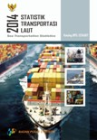

Statistik Transportasi Udara
Tanggal Rilis : 2015-11-10
Publikasi Statistik Transportasi Udara Tahun 2014 merupakan pecahan dari Publikasi Statistik Transportasi yang terbit mulai tahun 2015. Publikasi ini disusun agar lebih informatif bagi para pengguna data, dan merupakan kumpulan data dan informasi dari berbagai aktivitas transportasi udara. Data yang disajikan pada publikasi ini meliputi data lalu lintas pesawat, penumpang, barang, bagasi, dan pos menurut bandar udara asal dan tujuan serta produksi perusahaan penerbangan di Indonesia.